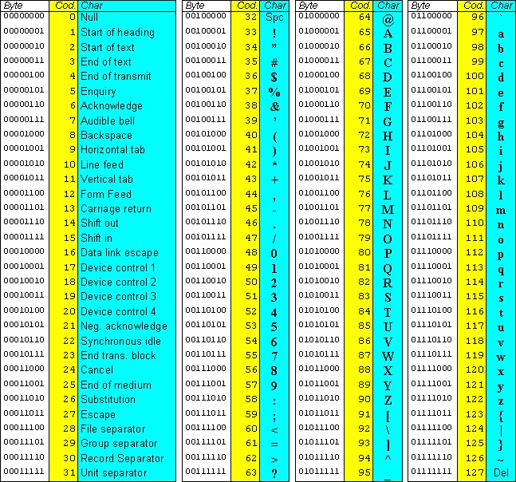
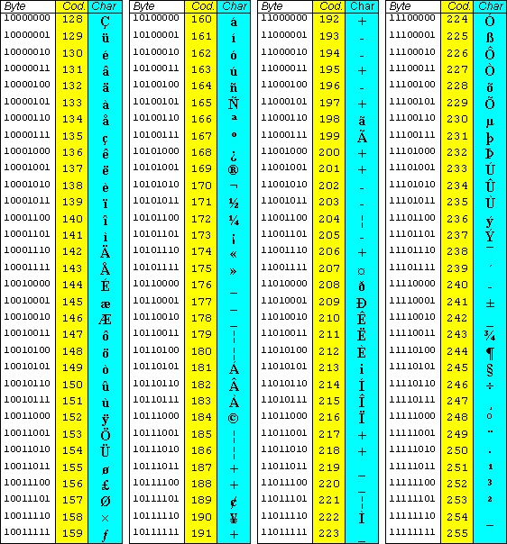
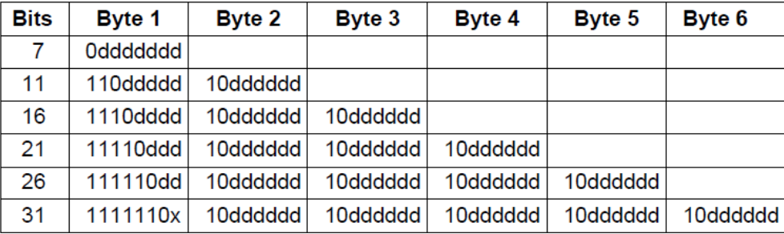

Un PC deve essere in grado di codificare opportunamente qualsiasi tipo di dato:
Codifica dei CARATTERI
Un carattere è un
elemento singolo di una
stringa di testo
- Cifre, Lettere, Simboli di Puntaggiatura
- Simboli speciali #, %, @, ...
- Caratteri speciali che contengono informazioni di controllo
come tabulazione, ESC, spostamento del cursore
CODICE ARBITRARIO
- Per le Cifre si usa la formula C('0') + Cifra
- Per i caratteri si usa la formula C('A') + posLettera-1
Esistono diversi codici per rappresentare i vari caratteri testuali,
ognuno di essi ha una tabella che converte ogni carattere in formato binario
CODICE ASCII
|

ASCII standard 7 bit
|

ASCII esteso 8 bit
|
CODICE UCS (UNICODE Character Set)
- Codice a lunghezza variabile, 2 o più Byte per Carattere
- Il codice carattere non è univoco
- Alcuni codepoint vengono lasciati vuoti per future espansioni
UTF (UCS Transformation Format)

Alcuni Bit sono bloccati mentre quelli espressi con 'd' sono liberi di cambiare, codificando ogni tipo di carattere
PROPRIETÁ di un CODICE
- compatto: deve limitare il numero di bit necessari per la codifica
- pratico: ottenere il codice semplicemente
- accuratezza: deve minimizzare le perdite di informazione
É possibile che si verifichino degli errori nella trasmissione o nella memorizzazione.
- RUMORE nel canale di trasferimento
- Imperfezione nei supporti di memorizzazione
- Alterazioni dei supporti di memoria (radioattività)